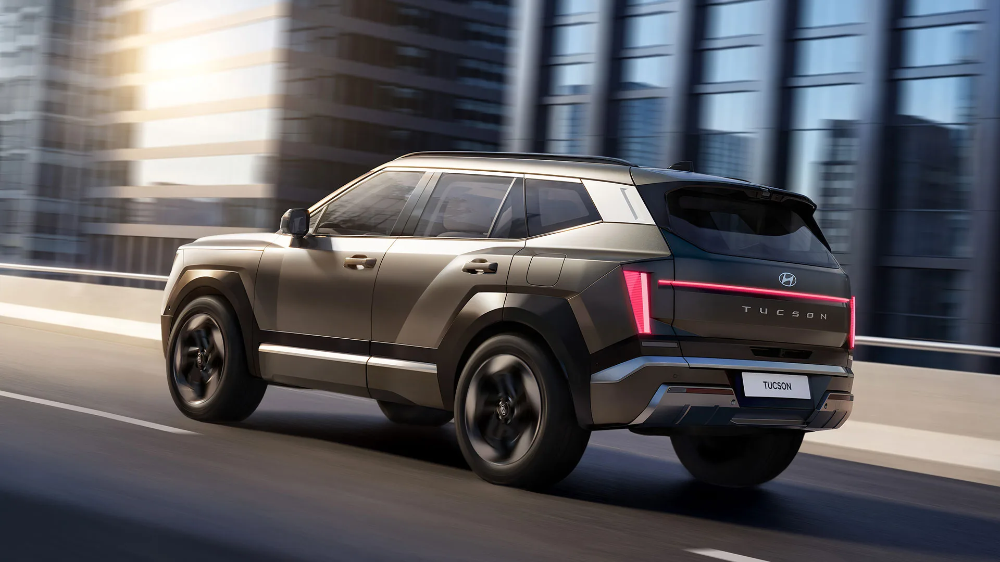
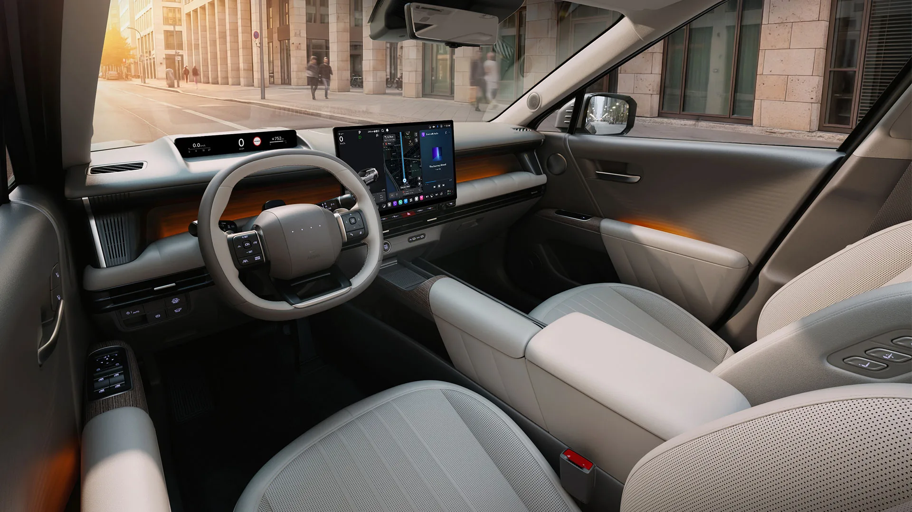
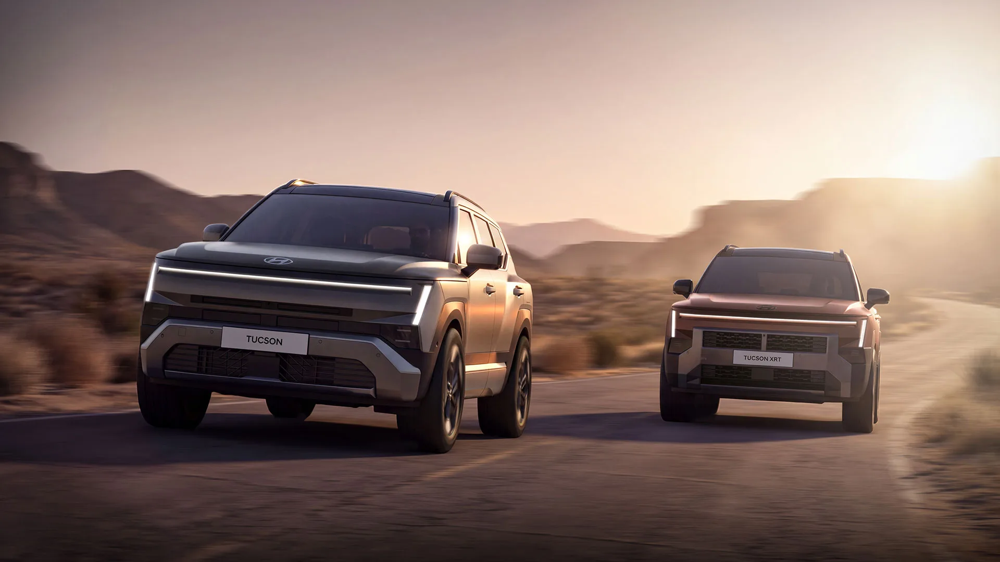
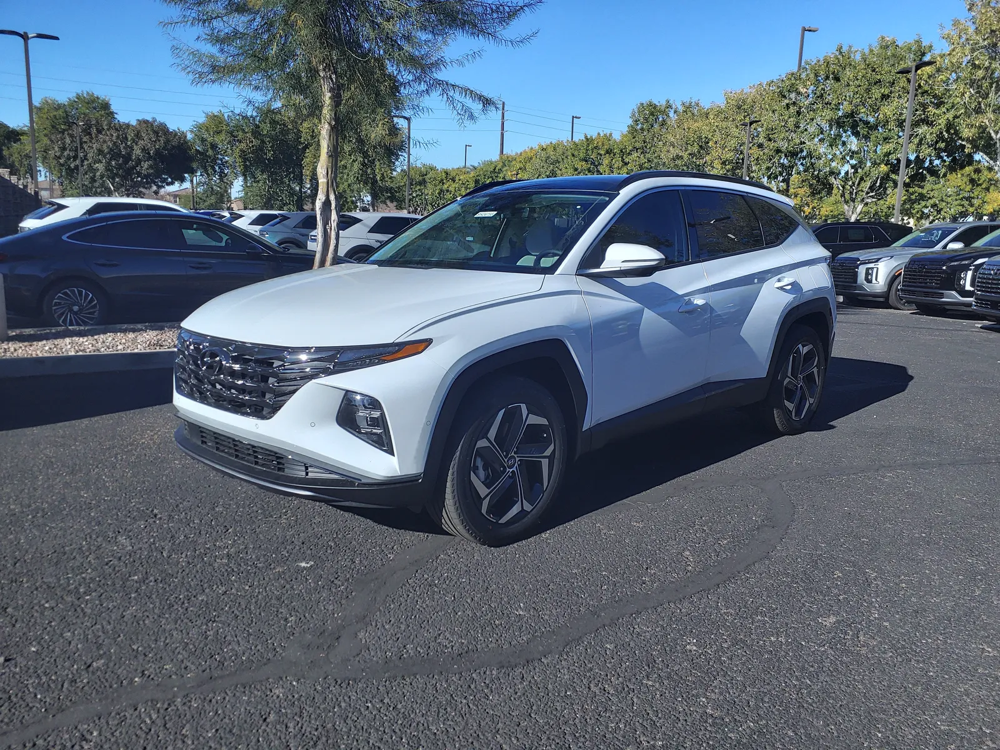
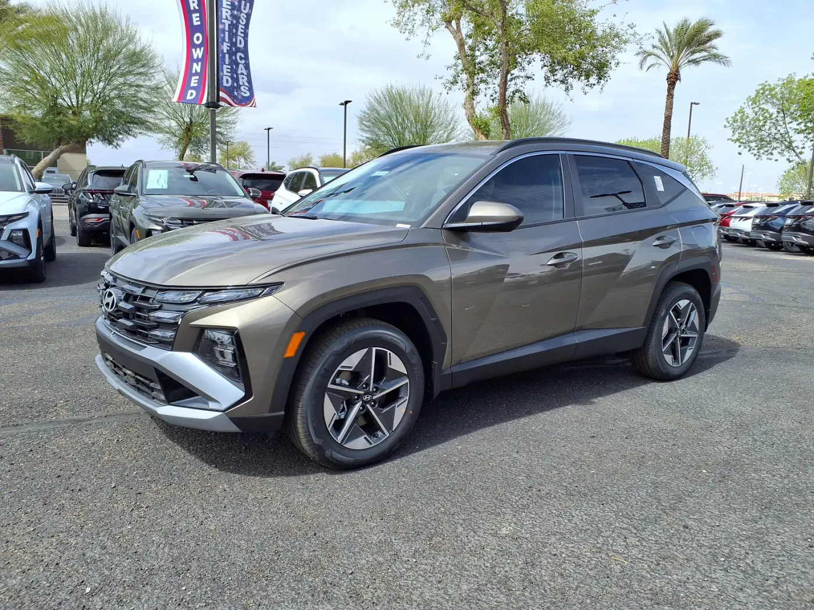
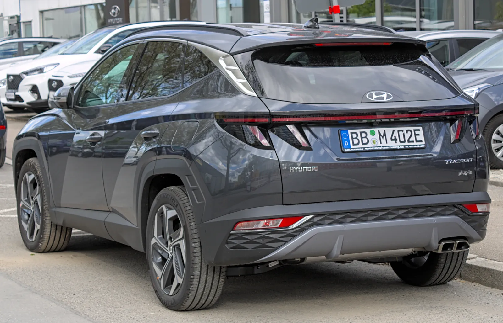
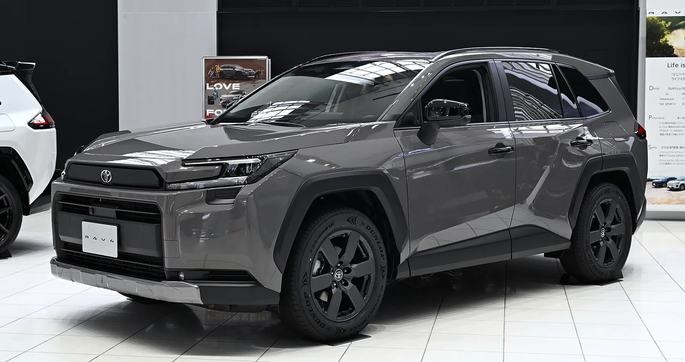
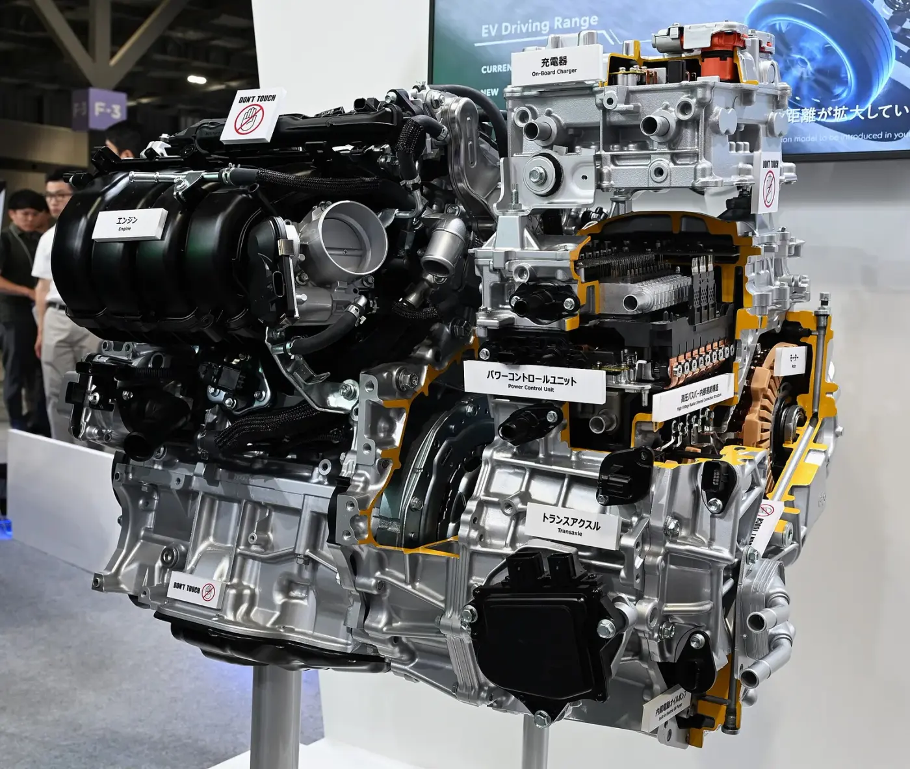

▲ 10월 1일 뉴욕에서 공개된 2027 투싼(한국 공개 때 배포된 현대차 보도사진) ⓒ 현대자동차그룹
"구매자들이 원하지 않았다." 현대차 임원이 2027년형 투싼에서 플러그인 하이브리드(PHEV)를 뺀 이유를 이렇게 설명했다. 10월 1일(현지시간) 뉴욕 롱아일랜드시티에서 열린 월드 프리미어 직후 나온 미국 매체 보도를 종합하면, 미국형 투싼은 1.6L 터보 가솔린과 233마력 하이브리드 두 가지로 구성되고 PHEV는 이어지지 않는다. 대신 현대차는 "앞으로 투싼에도 주행거리연장형 전기차(EREV)가 가능하다"는 여지를 남겼다.
이 글은 미국 사양, PHEV 취소 배경, RAV4·CR-V와의 경쟁 구도에 집중한다. 한국 사양과 디자인은 5세대 투싼 공개 기사에서, 글로벌 누적 1000만 대 이력은 투싼 1000만 대 기사에서 다뤘다.
1. 미국형 투싼 — 파워트레인은 두 가지, 하이브리드가 중심
카앤드라이버(조이 카펠라 기자, 10월 1일)는 새 투싼 미국형의 기본 엔진이 터보 1.6L 직렬 4기통이라고 전했다. 이전 세대의 자연흡기 2.5L를 대체하는 구성이다. 출력은 184마력으로 기존보다 3마력 낮지만 토크는 178lb-ft에서 195lb-ft로 올랐다. 하이브리드는 같은 1.6L 터보에 전기모터 두 개를 더해 합산 233마력이며, 두 파워트레인 모두 전륜구동과 사륜구동이 제공된다.
| 구분 | 1.6L 터보 가솔린 | 1.6L 터보 하이브리드 |
|---|---|---|
| 출력 | 184마력(현대차 보도자료 기준, 카앤드라이버·더드라이브) / 187마력(카버즈·잘로프닉) | 233마력(카앤드라이버·더드라이브·잘로프닉) |
| 토크 | 195lb-ft | 280lb-ft |
| 변속기 | 8단 자동(카버즈·잘로프닉) | 6단 자동(카버즈·잘로프닉) |
| 복합 연비 | FWD 28mpg / AWD 26mpg(잘로프닉) | FWD 최대 42mpg / AWD 38mpg(잘로프닉 기준, 더드라이브는 약 40mpg) |
| 0-60mph | 9.5초(잘로프닉) | 8.5초(현대차 보도자료는 목표치로 표기) |
| 견인 | 확인 못 함 | 3000lb(약 1360kg, 카앤드라이버) |
| 구동방식 | FWD / AWD | FWD / AWD |
📍 가솔린 출력이 184마력인지 187마력인지
매체마다 가솔린 출력이 다르게 적혀 있다. 카앤드라이버와 더드라이브는 184마력, 잘로프닉은 187마력으로 전했다. 현대차 글로벌 보도자료도 1.6 T-GDI를 184마력 수준으로 표기해 184마력 쪽이 더 유력하지만, 미국 EPA 인증 전이라 최종 공식 수치는 확인하지 못했다. 변속기 단수도 카버즈·잘로프닉 보도 기준이며 현대차 미국법인 원문에서 직접 확인하지는 못했다.
▲ 2027 투싼의 전면부. 한국 공개 때 배포된 현대차 보도사진으로, 미국 사양은 세부가 다를 수 있다 ⓒ 현대자동차그룹
2. "최대 42mpg"는 EPA 수치일까 — 표기가 갈리는 연비
이번 발표에서 가장 많이 인용된 숫자는 FWD 하이브리드(17인치 휠)의 복합 42mpg다. 카앤드라이버는 이를 "현대차가 주장하는(claims) 수치이며, 기존 AWD 전용 하이브리드보다 4mpg 높다"고 썼다. 잘로프닉(앤디 칼모비츠 기자)은 같은 수치를 'EPA 추정 복합 연비'로 소개했고, 오토피안(맷 하디건 기자)은 "목표 연비"로 쓰면서 복합인지 도심인지 분명치 않다고 적었다. 현대차 글로벌 보도자료는 "2WD 하이브리드, 17인치 휠 기준 최대 42mpg"를 목표(target)로 표기했다.
종합하면 미국 시장에서 팔릴 차의 EPA 공식 라벨 수치가 확정 공표됐다는 근거는 확인하지 못했다. 보도자료의 'target'이라는 표현을 따르는 것이 안전하다. 이 수치는 이전 세대 AWD 하이브리드(복합 38mpg, 카앤드라이버 "+4mpg" 기준 역산)와 비교한 것이며, 이번 AWD 하이브리드는 38mpg 안팎(잘로프닉·카버즈 보도)으로 비슷한 수준을 유지한다.
| 출처 | 42mpg 표기 | 비고 |
|---|---|---|
| 현대차 글로벌 보도자료 | "최대 42mpg" 목표 | 2WD, 17인치 기준 |
| 카앤드라이버 | 현대차 주장 복합 연비 | 이전 AWD 하이브리드보다 +4mpg |
| 잘로프닉 | EPA 추정 복합 연비 | AWD는 38mpg |
| 오토피안 | 목표(복합·도심 불분명) | 제목은 "42 MPG 하이브리드" |

▲ 가로로 이어진 발광 리어 램프가 특징인 2027 투싼의 후면(한국 공개 보도사진). 더드라이브는 공기저항계수가 0.33에서 0.30으로 줄었다고 전했다 ⓒ 현대자동차그룹
3. 커진 차체와 실내 — 뒷문 83도, 17인치 화면
카앤드라이버에 따르면 미국형 투싼은 이전 세대보다 길이 2.4인치, 폭 1.6인치, 높이 0.8인치 커졌고 휠베이스도 늘어 뒷좌석과 화물 공간이 넓어졌다. 화물 공간은 약 42입방피트로 소개됐다(카버즈는 41.7입방피트, 이전 38.7입방피트로 보도). 뒷문은 83도까지 열리며(이전 73도, 카버즈 보도) 더드라이브는 모든 문이 10도씩 더 열린다고 썼다.
| 항목 | 내용 | 출처 |
|---|---|---|
| 크기 변화 | 길이 +2.4in, 폭 +1.6in, 높이 +0.8in | 카앤드라이버(잘로프닉도 동일) |
| 화물 공간 | 약 42입방피트(41.7 vs 이전 38.7) | 카앤드라이버·카버즈 |
| 중앙 화면 | 12.9인치 기본, 17인치 선택 | 카앤드라이버·카스닷컴 |
| 운전자 화면 | 9.9인치 슬림 디스플레이 | 잘로프닉·현대차 보도자료 |
| 소프트웨어 | 플레오스 커넥트(안드로이드 오토모티브 기반) + 글레오 AI 음성 비서 | 현대차 보도자료 |
| 물리 버튼 | 볼륨·튜닝 노브, 공조 스위치 유지 | 카앤드라이버 |
| 편의 사양 | 컬럼 시프트, 에르고 모션 마사지 시트, 듀얼 무선충전 패드, 100W USB-C | 카앤드라이버·더드라이브 |
카앤드라이버는 현대차가 대시보드의 모든 조작을 화면에 넣는 흐름을 따르지 않았다며, 화면 아래에 물리 볼륨·튜닝 노브와 공조 스위치가 남은 점을 짚었다. 에르고 모션(마사지 기능이 포함된 앞좌석)은 이 급에서는 드문 선택 사양이라고 평했다. 인포테인먼트 구성은 한국 사양과 같은 플레오스 커넥트이므로 세부는 한국형 기사로 갈음한다.

▲ 2027 투싼 실내. 대형 디스플레이와 물리 버튼 조합이 특징이다(한국 공개 보도사진, 미국형은 17인치 화면을 고를 수 있다) ⓒ 현대자동차그룹
4. 북미 전용 XRT Pro — 하이브리드에만 얹는다
미국 라인업에서 눈에 띄는 변화는 새 XRT Pro 트림이다. 카앤드라이버는 SE·SEL·리미티드가 기본 트림이고 XRT Pro가 추가된다고 전했다(가격 미정). 현대차 보도자료와 중앙데일리는 XRT Pro가 북미 전용 오프로드 사양이라고 밝혔다. 잘로프닉과 카버즈에 따르면 지상고는 8.3인치(일반형보다 1.2인치 높음)이고 올터레인 타이어, 전면 리커버리 훅, 포지드 카본 무늬 범퍼, 언더바디 스키드 플레이트를 적용한다. 카버즈는 자동 지형 모드 선택 기능(스마트 터레인 어시스트)과 저속 크루즈 컨트롤도 소개했다.
핵심은 XRT Pro가 하이브리드 전용이라는 점이다. 가솔린 XRT Pro는 없다. 가장 강한 오프로드 트림이 연비 높은 하이브리드로만 나온다는 얘기다. 하이브리드를 미국 투싼의 주력으로 밀겠다는 신호로 읽히지만, 현대차가 이를 공식적으로 '주력 전환'이라고 설명한 것은 확인하지 못했다. 이는 카프리즘의 해석이다.

▲ 일반형(왼쪽)과 오프로드 감성의 XRT(오른쪽). 한국 공개 때 배포된 사진이며 북미 전용 XRT Pro 그 자체는 아니다 ⓒ 현대자동차그룹
5. PHEV 취소 — 현대차는 무엇이라고 했나
카버즈(조엘 스톡스데일 기자, 10월 1일)는 현대차 제품기획·모빌리티전략 담당 올라비시 보일 수석부사장이 투싼 PHEV 단종 이유를 묻는 질문에 "수요가 충분하지 않았다. 구매자들이 원하지 않았다(it simply didn't have enough demand. Buyers didn't want it)"고 답했다고 전했다. 카앤드라이버·더드라이브·잘로프닉도 미국에서는 PHEV를 이어가지 않는다고 보도했고, 더드라이브는 이유를 "소비자 관심 부족"이라고 썼다.
| 구분 | 내용 | 성격 |
|---|---|---|
| 단종 대상 | 미국 투싼 PHEV(2022년형부터 판매) | 카버즈 보도 |
| 이유 | "수요가 충분하지 않았다" | 현대차 임원 발언(매체 인용) |
| 업계 전반의 PHEV 부진 | 현대차만의 문제가 아니라 PHEV 부문 전체가 저조 | 카버즈가 인용한 보일 부사장 발언("PHEV 부문 전반의 낮은 수요") |
| 판매량 근거 | 투싼 PHEV 판매량·비중 | 공개 자료에서 확인 못 함 |
현대차 글로벌 보도자료의 제원에는 PHEV(최대 292ps, 전기 주행거리 약 81km·50마일, 7.2kW 완속 충전기)가 따로 실려 있는데, 이는 한국·유럽 등 다른 시장 사양으로 보이며 미국 라인업과는 별개다. 카버즈는 PHEV가 다른 시장에서는 계속 판매된다고 보도했으나 시장별 판매 여부는 직접 확인하지 못했다. 미국형만 PHEV가 빠졌다고 보는 것이 맞고, "투싼 PHEV가 글로벌로 사라졌다"고 단정할 근거는 없다.
그렇다면 접힌 차는 어떤 차였을까. 미국 자동차 정보 사이트 집계(에드먼즈·US뉴스 등 검색 결과 기준)로 보면 현행 2026년형 투싼 PHEV는 1.6L 터보 엔진과 13.8kWh 배터리를 조합해 시스템 출력 268마력을 내고, 전기 모드 주행거리는 약 32~33마일(약 51~53km)로 소개된다. 트림은 SEL과 리미티드 두 가지이며 시작가는 SEL 4만325달러, 리미티드 4만8550달러로 집계된다. 판매점 가격 정보를 모은 수치라서 현대차 미국법인 공식 가격표와 다를 수 있고, 이번 월드 프리미어 자료에서 직접 확인한 것은 아니다.

▲ 미국 딜러 매장의 2024년형 투싼 PHEV 리미티드. 이번에 미국에서 단종이 확정된 현행 세대(4세대)의 플러그인 모델이다 ⓒ HJUdall (Wikimedia Commons, CC0)
| 항목 | 현행 투싼 PHEV(미국) | 2027 투싼 하이브리드(미국) |
|---|---|---|
| 시스템 출력 | 268마력(집계 사이트 기준) | 233마력(카앤드라이버 등) |
| 배터리 | 13.8kWh(집계 사이트 기준) | 현대차 글로벌 보도자료는 한국 사양 기준 1.49kWh·270V로 표기, 미국형 별도 수치는 확인 못 함 |
| 전기 주행거리 | 약 32~33마일 | 해당 없음(외부 충전 불가) |
| 외부 충전 | 가능 | 불가(셀프 충전식 하이브리드) |
| 시작가 | SEL 4만325달러(집계 기준) | 미발표 |
숫자로만 보면 PHEV는 출력이 높고 전기로만 한 달 출퇴근을 감당할 수 있는 차였다. 그럼에도 현대차가 "수요가 없었다"고 판단한 것은 충전 환경과 가격 문제가 겹쳤기 때문일 가능성이 있다. 다만 이는 카프리즘의 추정이며, 현대차가 그런 이유를 직접 밝힌 것은 확인하지 못했다. 카버즈는 PHEV가 정기적으로 충전해야 연비 이점을 얻는다는 점을 EREV와 같은 잠재적 진입장벽으로 짚었다.

▲ 2025년형 투싼 플러그인 하이브리드 SEL. 부분 변경 이후 모델로, 2027년형 완전변경과 함께 미국 라인업에서 빠진다 ⓒ HJUdall (Wikimedia Commons, CC0)
한국 독자에게 의미하는 것. 현대차 글로벌 보도자료에는 한국 사양으로 보이는 PHEV(292ps, 전기 주행거리 약 81km)가 그대로 실려 있다. 미국 사정과 달리 국내에서는 PHEV 선택지가 남을 가능성이 있지만, 국내 출시 사양·가격은 올해 말 한국 출시 때 공개될 예정이라 지금 단정할 수 없다. 카프리즘은 미국형 단종 소식이 곧 국내 단종을 뜻한다고 보지 않는다.

▲ 유럽에서 판매 중인 4세대 투싼 PHEV의 후면(독일 뵈블링겐). 유럽형 PHEV의 향후 계획은 공개되지 않았다 ⓒ Alexander Migl (Wikimedia Commons, CC BY-SA 4.0)
6. PHEV 대신 EREV? — 현대차가 남긴 여지
카버즈 제목처럼 PHEV는 접혔지만 "다른 하나가 잿더미에서 살아날 수 있다." 보일 부사장은 같은 자리에서 "기회가 있다고 보는 것은 주행거리연장형 전기차다. 배터리가 더 크고 주행거리가 길다. 내년에 서로 다른 두 차종에 EREV를 내놓는다. 앞으로 투싼에도 가능성이 있다"고 말했다고 카버즈는 전했다. 카버즈는 EREV의 전기 주행거리를 100~150마일, 싼타페 EREV 합산 600마일, 제네시스 EREV 640마일(2027년 상반기)로 소개했고, 제네시스 차종은 GV70으로 추정된다고만 적었다.
📍 EREV는 투싼의 약속이 아니다
현대차 발언은 "투싼에도 가능성이 있다"는 수준이며, 투싼 EREV 출시 시점이나 사양은 공개되지 않았다. 카앤드라이버도 현대차가 향후 투싼에 EREV 파워트레인 추가를 이야기했다고만 썼다. 즉 2027년 출시 투싼은 가솔린과 하이브리드뿐이다.
현대차는 앞서 앨라배마 공장에 약 5억 달러를 투자해 미국 판매용 투싼 하이브리드 생산을 한국에서 몬트고메리로 옮기고 EREV 관련 부품도 만든다고 밝혔다고 오토모티브뉴스 등이 보도했다. 투싼 하이브리드의 현지생산 배경은 투싼 1000만 대 기사에서, 미국 하이브리드 전략은 투싼 하이브리드 미국 출시 예고 기사에서 다뤘다.

▲ 현대차 앨라배마 공장(몬트고메리) 정문과 사무동. 현대차는 이곳에서 투싼 하이브리드 생산과 EREV 관련 부품을 맡길 계획이라고 보도됐다 ⓒ Carol M. Highsmith (Wikimedia Commons, 퍼블릭 도메인)
7. 미국에서 투싼이 얼마나 중요한가 — 3분기 6만4075대
미국 현대차의 간판은 투싼이다. 중앙데일리에 따르면 지난해 투싼은 미국 현대차 전체 판매 98만4017대 중 23만4230대로 23.8%를 차지했다(234,230 ÷ 984,017 = 23.8%). 2004년 미국 출시 이후 누적 판매는 223만 대다. 현대차 미국법인이 발표한 3분기 실적에서도 투싼이 성장을 이끌었다.
| 구분 | 판매량 | 전년 대비 |
|---|---|---|
| 3분기 전체 | 24만6896대 | +3%(역대 3분기 최고) |
| 3분기 투싼 | 6만4075대 | +23%(분기 사상 최대) |
| 9월 전체 | 7만7439대 | +9% |
| 9월 투싼 | 2만3164대 | +32% |
| 1~9월 투싼 | 18만1687대 | +10% |
| 1~9월 전체 | 69만7464대 | +3% |
| 하이브리드 | 9월 비중 28% | 9월 +39%, 3분기 +35% |
계산해 보면 3분기 투싼은 현대차 미국 3분기 판매(24만6896대)의 약 26%(64,075 ÷ 246,896 = 25.95%)를 차지한다. 구형 투싼이 판매 기록을 쓰는 가운데 신형으로 세대교체하는 것이 이번 월드 프리미어의 부담이자 기회다. 현대·기아의 미국 점유율 흐름은 현대·기아 미국 점유율 기사에서 확인할 수 있다.
| 모델 | 하이브리드 출력 | 비고 |
|---|---|---|
| 투싼 하이브리드 | 233마력(미국형) | FWD 최대 42mpg(목표) |
| 토요타 RAV4 | 226마력(FWD)·236마력(AWD) | 카버즈 8월 기사 인용(하이브리드 전용 구성이라고 소개) |
| 혼다 CR-V 하이브리드 | 204마력·247lb-ft | 카버즈 수치, 미국 사양 최종 확인 못 함 |
경쟁사 출력 수치는 카버즈의 8월 기사(2027 투싼 하이브리드 예상 사양 비교)에서 인용한 것으로 당시 투싼 하이브리드 예상치는 245마력이었다. 이번 공식 발표 수치(233마력)와 다르므로 비교 시 감안해야 한다. 투싼 233마력은 RAV4 FWD(226마력)보다 높고 AWD(236마력)보다는 낮다. 연비와 가격은 아직 비교할 수 없다.

▲ 투싼의 최대 경쟁자로 꼽히는 토요타 신형 RAV4(일본 전시 차량) ⓒ TTTNIS (Wikimedia Commons, CC0)
8. RAV4는 PHEV를 유지한다 — 현대차는 접었다
흥미로운 대목은 경쟁사의 선택이다. 토요타는 신형 RAV4에 하이브리드와 함께 PHEV 시스템도 선보였다. 현대차가 "PHEV 수요가 없다"고 한 것과 대비된다. 토요타 RAV4 PHEV의 사양은 RAV4 GR 스포츠 PHEV 기사에서 정리했다. 다만 RAV4 PHEV의 미국 판매 실적과 투싼 PHEV와의 구체적 비교는 이번 조사에서 확인하지 못했다.

▲ 토요타 신형 RAV4 PHEV 시스템 단면 전시(일본 전시장) ⓒ TTTNIS (Wikimedia Commons, CC0)
9. 가격·출시 — 무엇이 아직 비어 있나
미국형 투싼에서 확정되지 않은 항목이 많다. 현대차 보도자료는 한국은 올해 말, 북미·유럽 등은 2027년이라는 큰 일정만 제시했다. 카앤드라이버는 미국 딜러 도착을 "내년 초", 카버즈는 2027년 1분기로 전했으나 현대차 미국법인이 월 단위로 확정한 것은 확인하지 못했다. 가격은 어느 매체도 공개하지 않았다. 오토피안은 현행 모델보다 "작지 않은 폭으로 오를 것"이라고 추측했는데, 이는 기자 개인의 예상이다. 월드 프리미어 발표문은 현대차 보도자료에서 확인할 수 있다. 현대차 보도자료 바로가기
| 항목 | 상태 |
|---|---|
| 미국 판매 시점 | 2027년(보도자료) — 월 미확정, 카앤드라이버는 "내년 초" |
| 미국 가격 | 미발표 |
| EPA 공식 연비 | 미공표(42mpg는 현대차 목표/주장) |
| PHEV | 미국 단종, 현대차 임원 "수요 부족" |
| EREV 투싼 | "가능성" 언급, 시기 미정 |
| 트림 구성 | SE·SEL·리미티드·XRT Pro 예상(카앤드라이버), 세부 사양 미공개 |
중앙데일리에 따르면 유럽형 투싼은 10월 12일 파리 모터쇼에서 공개된다.
10. 요약
2027 투싼 미국형은 1.6L 터보 가솔린(184마력)과 233마력 하이브리드로 구성되고, 미국에서는 PHEV가 단종됐다. 현대차 보일 수석부사장은 "수요가 충분하지 않았다"고 설명했다.
FWD 하이브리드 "최대 42mpg"는 현대차의 목표·주장 수치이며 EPA 확정 라벨은 확인되지 않았다. 매체마다 표기가 달라 'EPA 추정'으로 쓴 곳과 '목표'로 쓴 곳이 갈린다. 하이브리드 전용 XRT Pro가 북미 전용으로 추가된다.
PHEV 대신 EREV가 거론되지만 투싼 적용은 "가능성" 단계다. 3분기 미국 투싼은 6만4075대(+23%)로 분기 신기록을 썼고, 미국 판매는 2027년 시작된다. 가격과 정확한 출시월은 확인되지 않았다.